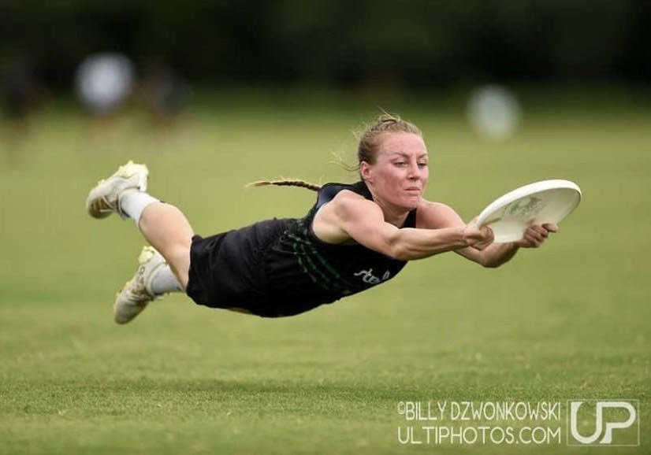

About Me!
Hi!! Welcome to my website! My name is Jessica, and I am a 20-year-old aspiring Media Designer originally from Regina Saskatchewan! I am a very outgoing, spontaneous, charismatic individual who loves to be out in nature. Whether it’s skiing, camping, hiking, biking, or playing the best sport ever, Ultimate Frisbee, I am there! I have always loved the sport of ultimate as it has a very different atmosphere then most other sports, even at the professional level. I am lucky enough to have played on teams ranging from low level beer league to winning Silver Medal while representing Canada at PAUC. Unfortunately, my ultimate career was put on pause when I tore my ACL on December 1st, 2019. A ton on recovery later and I was ready to play again, but COVID had different plans. Eventually, because there was no Ultimate due to COVID, I decided to go ahead and get reconstructive ACL surgery on December 17th, 2020 to begin my 1-year rehab to play Ultimate again. Something that has helped push me during my recovery is a quote from Olympic Medalist Jackie Joyner-Kersee.
“The only person who can stop you from reaching your goals is you.”

Being someone who loves to be outside all the time, I find a lot my inspiration for my art comes from nature. I am always pushing myself to be better today then I was yesterday, and I find getting outside helps with sparking new ideas and helps get the creative juice flowing! Having said that, I am excited to be part of the IMD. program at Algonquin college. This program will help push me increase the skills I currently have as well as learn new skills such as coding!! If you are reading this it means I have successfully applied what I have learn't thus far in my Responsive Web Desing course taught by the best prof ever! I am so excited to see what else I will learn from this course and see where a new life with those skills will take me. I took 2 years off between high school and college to gain life experience, save money for college and figure out exactly what I wanted to go to school for. I bounced tons of ideas around from construction worker to police officer to interior designer, and I can honestly say I am so glad I took that time off to learn more about myself and what I love, like, and hate. I have found myself in a program that combines all the career goals I have ever wanted into one amazing program that will be more like a hobby then a job at the end of the day. All in all, I can’t wait to see what life I will create for myself and I can’t wait to meet the person I will become with everything I will learn throughout my life.
"The greatest glory in living lies not in never falling, but in rising every time we fall." -Nelson Mandela
My Hobbies
I have always been someone who loved trying new things, specifically when it comes to trying creative mediums Because of this I have picked up many hobbies such as:
- Playing Competitive/Professional Ultimate Frisbee
- Gardening/ Propogating
- Drawing
- Hiking
- Working out/ Training
- Biking/ Mountain Biking
- Photography
- Sculpting
- Caring for my Hedgehog Henry see below